You said the current map looks too much like an intelligence tool. Three designers each built a different answer as a small working prototype with real data. Nothing on the live map has changed. Pick one, or tell me which parts to combine.
Each prototype has three working screens: the home page, one claim, and one person or organisation. You can open and click through each one from its section below. Only about a dozen claims are filled in, and the screenshots were taken with a stand-in font, so the type will look a little different in the prototypes themselves.
| A. Reader-first | B. Explorer | C. Guided map | |
|---|---|---|---|
| Starts from | The 30 claims, in the order the video makes them | A search box and the most-named people and organisations | A map of six topic areas and three guided tours |
| Best for | Someone who watched the video and wants to know what is true | Someone who arrives with a name in mind | Someone who wants to be walked through a storyline |
| The network | A small diagram per claim and per name, nine names at most | A small diagram per profile; no overall graph | The home screen, but only a few names per topic until you ask for more |
| Answers "what holds up?" | Immediately, on the home page | Only as a tally beside the search | As a tally above the map |
| Shows recurring names across claims | Weakly: only on a name's own page | Strongly: that is the point of a profile | Partly: within a topic or a tour |
| Upkeep | Low: generated from the data, plus chapter titles | Low: generated from the data | High: someone picks the names, topics and tour scripts by hand |
| Main risk | Long home page; little free exploration | A profile can read like a charge sheet | Hand curation is where bias or error can enter |
The home page is the answer. A headline says the claims mostly hold up, and one bar splits the 708 checked points into what holds up, what needed correcting and what is unproven. Claims follow in video order, grouped into seven chapters, and each row carries a one-sentence finding. Claim pages always run in the same order: what the video says, verdict, bottom line, what holds up, what needs correcting, what is unproven, the other side, everyone named, sources.
Answers the reader's first question without a click. Reads like a publication, not software. Every row says something, which matters because 72 of 82 verdicts are "mostly accurate".
Gives up free exploration. You cannot see the same lobbyist or investor recurring across claims without opening that name's page. The headline and chapter titles are editorial choices that need your sign-off.
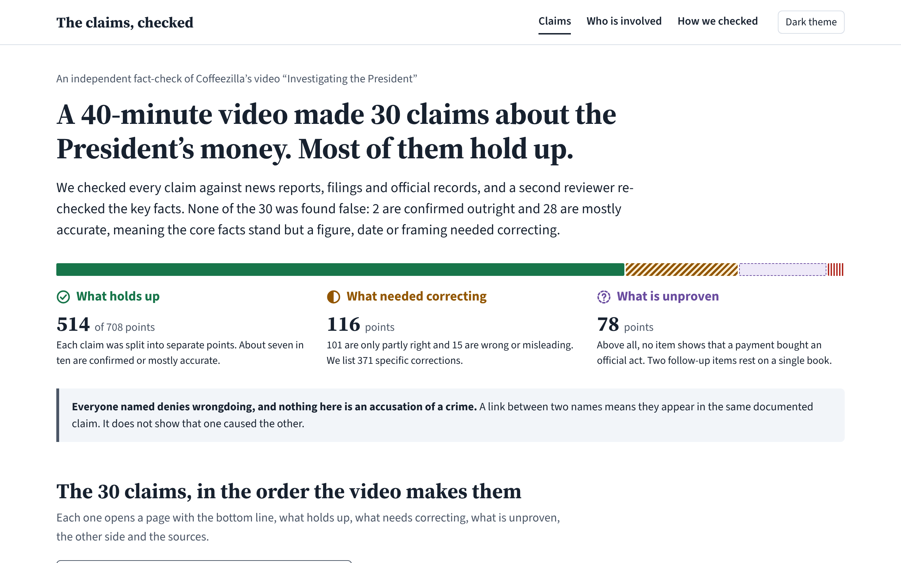
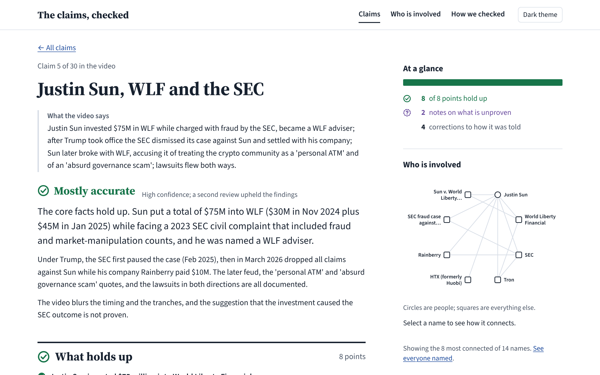
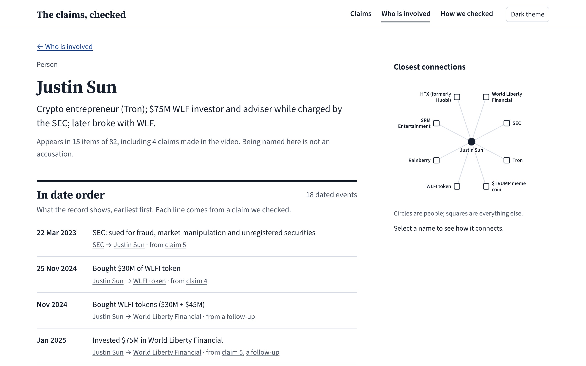
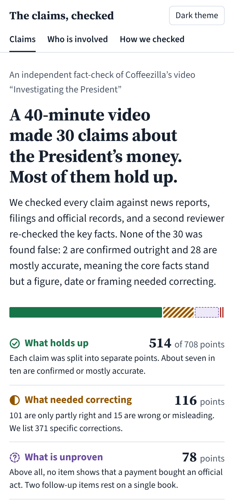
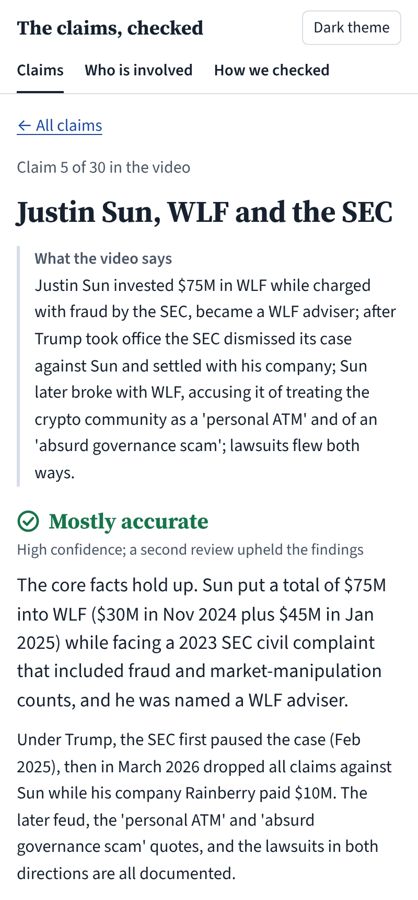
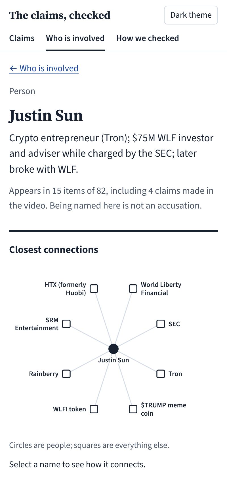
The home screen is a search box, the verdict tally and the most-named people and organisations. Every name gets a profile with a small diagram of its closest connections, a dated timeline, a strip of the largest sums and the claims that mention it. There is no whole-network graph: you walk it one step at a time, and every relationship line says who did what, when, and which claim it comes from.
The fastest route for someone who arrives with a name. Makes recurring names obvious. Search and browse are built in from the start.
A profile gathers everything about one person on one page, so it can read like a charge sheet despite the caveats. It tells the video's overall story less well. The same relationship is restated across claims, and the merging is still crude.
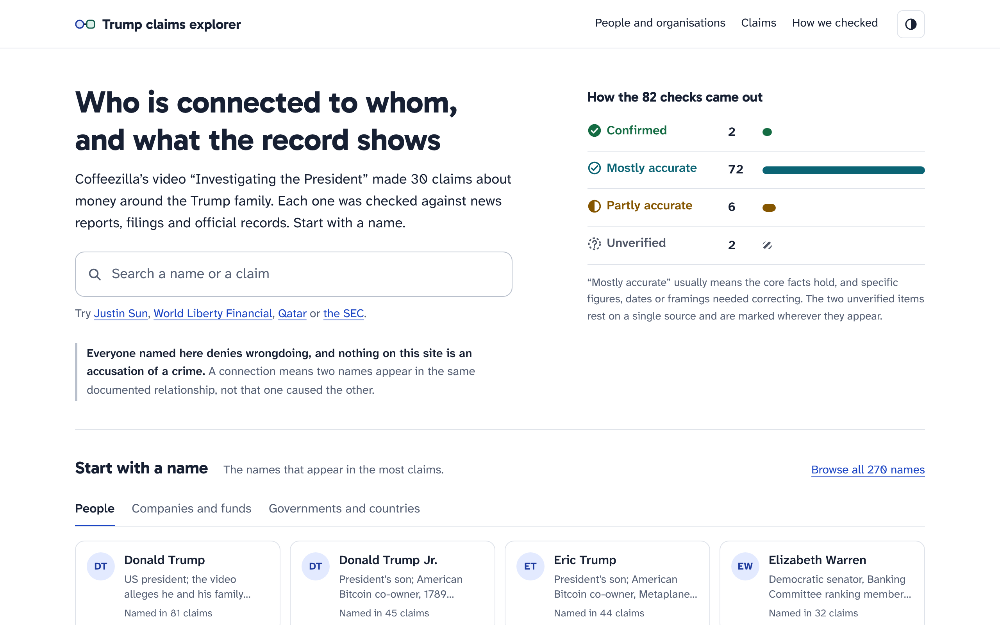
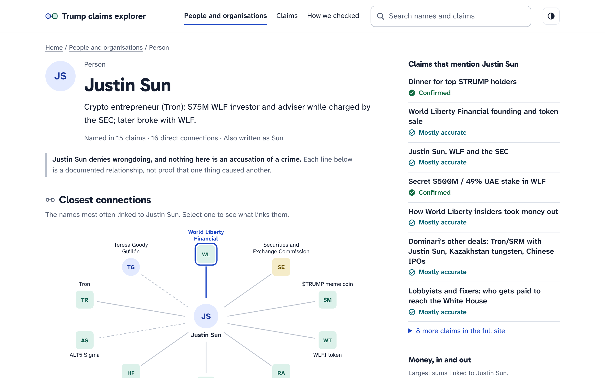
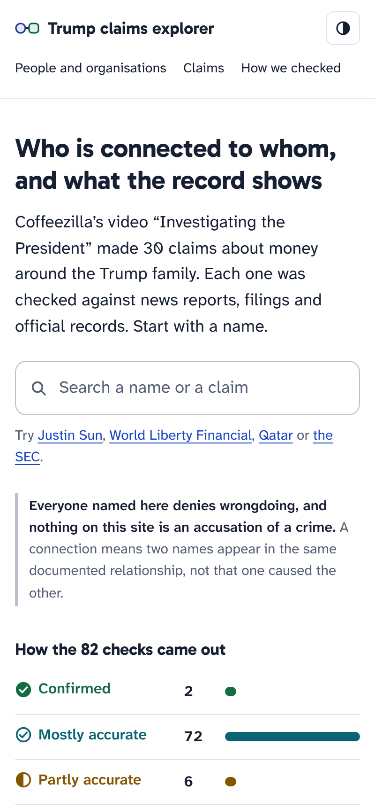
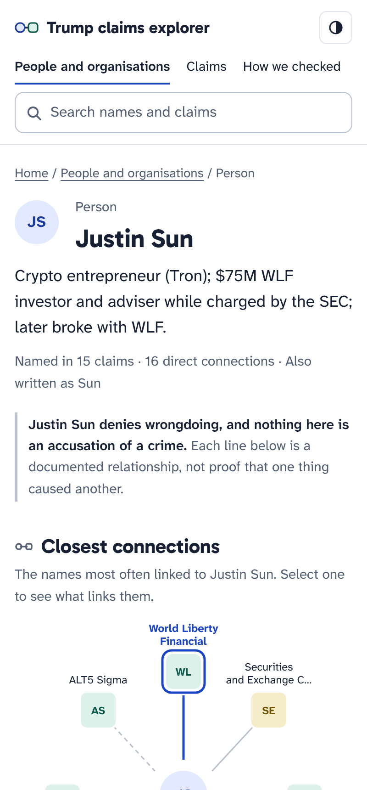
The home screen is a calm, hand-placed map of six topic areas, each showing three or four well-known names. Nothing moves. Choosing a topic opens it with more names and its claims; choosing a name numbers its links and explains each in a plain sentence. Three guided tours walk one storyline in four or five steps and each ends on what the record does not show. Unverified items are never drawn as lines.
Keeps the visual map you asked for at the start, without the hairball. Tours give a newcomer a way in. Ending every tour on what is not shown keeps it fair.
The map is curated by hand, not generated. Someone has to choose about 40 of roughly 1,160 names, assign topics and write the tours, which is ongoing work and a place for bias. There is no search yet, and the other names are reachable only through claim and name pages.
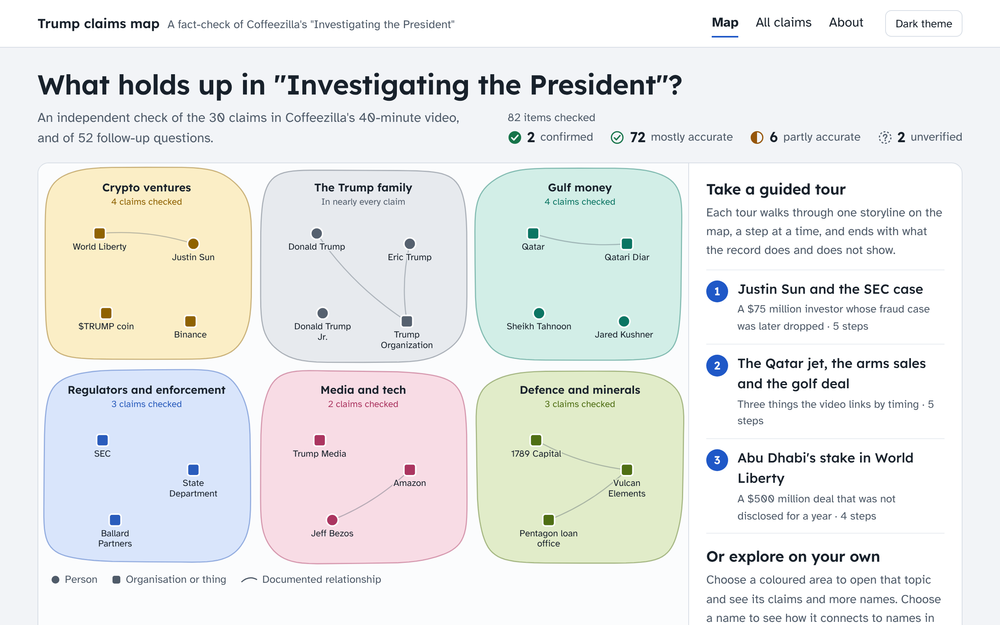
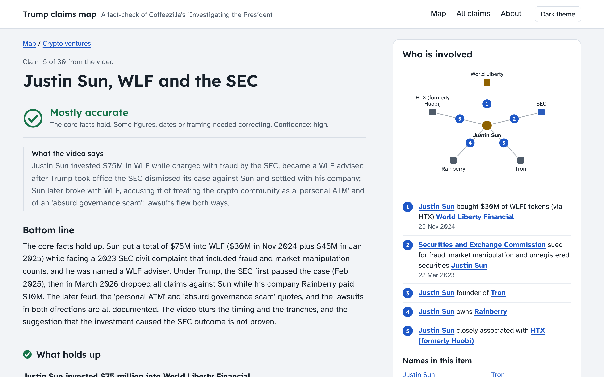
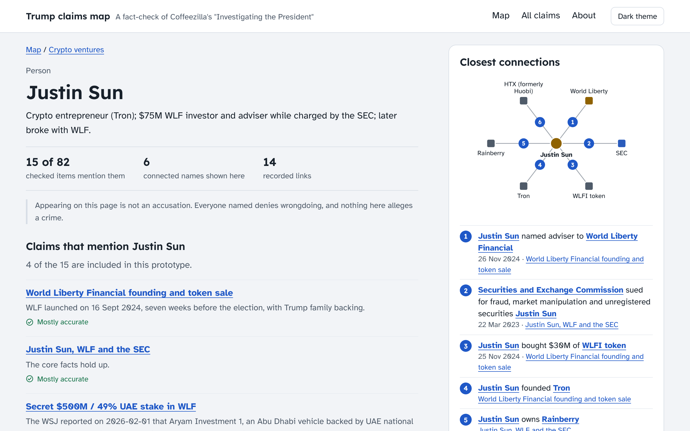
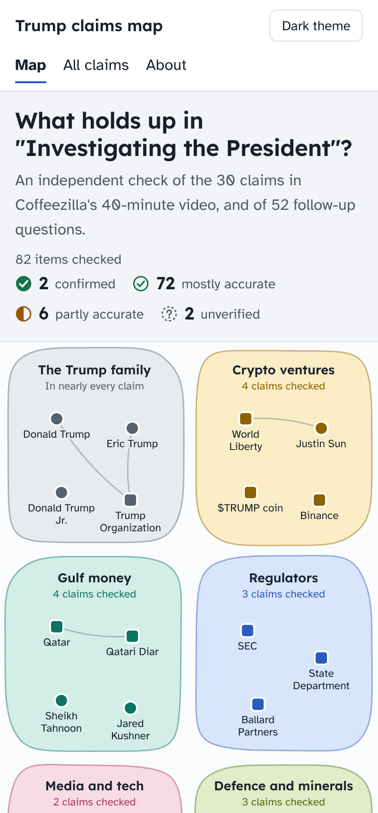
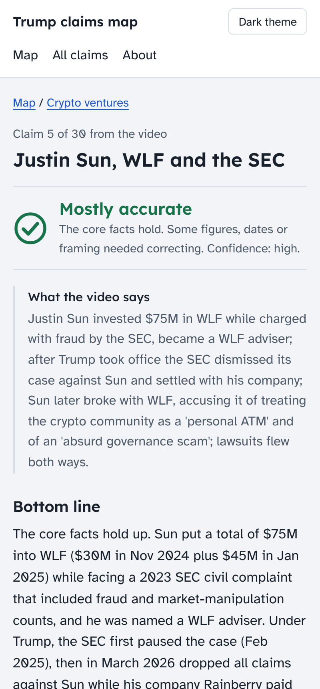
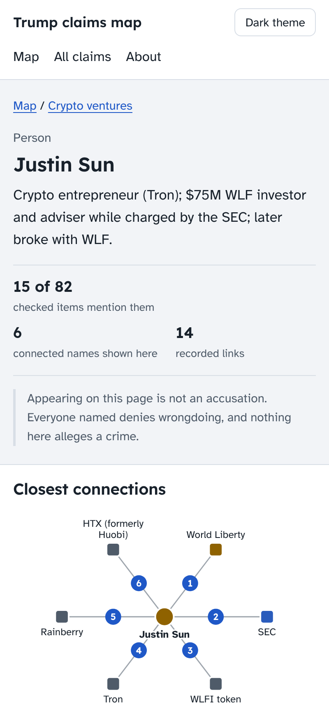
Build A as the base, and take one thing from each of the others.
This is my view, not a decision. All three designers hit the same gap: the research files do not record "what is unproven" as its own field, so any of these would need that added before a full build.